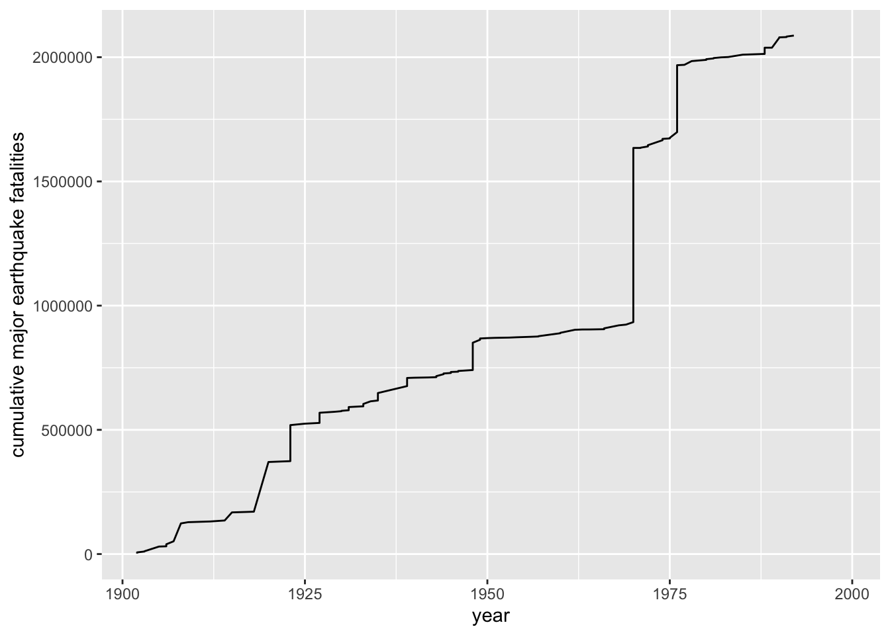

We have discussed some basic data manipulation commands in base R in the data and descriptive statistics page.
The tidyverse includes the package dplyr,
which is designed to help us readily tackle data manipulation tasks,
including the sorts of tasks we will encounter in MATH 140.
I encourage you to reproduce all of the results on this page in your own RStudio session.
The earthquakes data set is included in the package
openintro associated with our text. This data set gives us
information about all major 20th century earthquakes.
If you’ve installed the package openintro you can load
the data set into your session by loading the package, and then entering
earthquakes:
library(openintro)
df <- earthquakes # this creates a copy of the 'earthquakes' data set called 'df'Alternatively, you can load the data set into your session directly from its url:
df <- read.csv("https://www.openintro.org/data/csv/earthquakes.csv")Here’s a quick peek. The data frame has 123 observations and 7
variables associated with the date an earthquake occurred, its location,
its magnitude (richter), and the number of resulting
casualties:
dim(df)## [1] 123 7head(df,5)## # A tibble: 5 × 7
## year month day richter area region deaths
## <dbl> <chr> <dbl> <dbl> <chr> <chr> <dbl>
## 1 1902 April 19 7.5 Quezaltenango and San Marco Guatemala 2000
## 2 1902 December 16 6.4 Uzbekistan Russia 4700
## 3 1903 April 28 7 Malazgirt Turkey 3500
## 4 1903 May 28 5.8 Gole Turkey 1000
## 5 1905 April 4 7.5 Kangra India 19000dplyrTo access the functions in dplyr, our data management
package of choice, we load the tidyverse into our session:
library(tidyverse)The key to using
dplyris the%>%command, which I read as “then”, followed by an action, such asfilter()orselect(), which we discuss below.
For instance, I would read this code
lego %>% filter(pieces > 500) %>% arrange(desc(cost))as follows: “take the ‘lego’ data set, then filter
it to include just those lego sets with more than 500 pieces, and
then arrange these sets by how how much they cost, in
descending order.” Of course, the code above assumes I have a data frame
entitled lego having columns named pieces and
cost.
A brief list of commonly used dplyr action verbs:
| dplyr command | Description |
|---|---|
select() |
selecting columns (variables) |
filter() |
filter (subset) rows |
mutate() |
create new variables (columns) |
group_by() |
group the data |
summarize() |
summarize or aggregate the data |
arrange() |
sort the data |
join() |
joining data frames |
We use the filter() action to find those rows
(observations) that meet some criterion for a variable.
For instance, the following code starts with the earthquake data
frame df, then finds (via filter()) those
earthquakes occurring in the region equal to the United States:
df %>% filter(region=="United States")## # A tibble: 8 × 7
## year month day richter area region deaths
## <dbl> <chr> <dbl> <dbl> <chr> <chr> <dbl>
## 1 1906 April 18 7.7 San Francisco United States 3000
## 2 1933 March 10 6.2 Long Beach United States 115
## 3 1964 March 27 9.2 Alaska United States 131
## 4 1971 February 9 6.6 San Fernando Valley United States 65
## 5 1989 October 17 6.9 San Francisco United States 63
## 6 1992 June 28 7.3 Landers United States 3
## 7 1992 June 28 6.5 Big Bear United States NA
## 8 1994 January 17 6.8 Northridge United States 61Note: We use the double equal signs ==
when we are searching for entries that match a particular value or
character. We use a single equal sign (e.g., x = 4) to
assign a value or character to a variable.
Question: Which earthquakes registered 8.0 or higher on the Richter scale?
df %>% filter(richter>=8.0)## # A tibble: 12 × 7
## year month day richter area region deaths
## <dbl> <chr> <dbl> <dbl> <chr> <chr> <dbl>
## 1 1906 January 31 8.8 Esmeraldas (off coast) Ecuador 1000
## 2 1906 August 17 8.6 Valparaiso Chile 3882
## 3 1907 October 21 8.1 Central Asia 12000
## 4 1931 August 10 8 Xinjiang China 10000
## 5 1933 March 2 8.4 Sanriku Japan 2990
## 6 1934 January 15 8.1 Bihar India-Nepal 10700
## 7 1945 November 27 8 Makran Coast Pakistan 4000
## 8 1946 December 29 8.1 Honshu Japan 1362
## 9 1950 August 15 8.6 Assam India 1526
## 10 1960 May 21 9.5 South Chile 1655
## 11 1964 March 27 9.2 Alaska United States 131
## 12 1985 September 19 8 Michoacan Mexico 9500After filtering, we can arrange() (sort) this list of
earthquakes in descending order of magnitude on the richter scale:
df %>% filter(richter>=8.0) %>% arrange(desc(richter))## # A tibble: 12 × 7
## year month day richter area region deaths
## <dbl> <chr> <dbl> <dbl> <chr> <chr> <dbl>
## 1 1960 May 21 9.5 South Chile 1655
## 2 1964 March 27 9.2 Alaska United States 131
## 3 1906 January 31 8.8 Esmeraldas (off coast) Ecuador 1000
## 4 1906 August 17 8.6 Valparaiso Chile 3882
## 5 1950 August 15 8.6 Assam India 1526
## 6 1933 March 2 8.4 Sanriku Japan 2990
## 7 1907 October 21 8.1 Central Asia 12000
## 8 1934 January 15 8.1 Bihar India-Nepal 10700
## 9 1946 December 29 8.1 Honshu Japan 1362
## 10 1931 August 10 8 Xinjiang China 10000
## 11 1945 November 27 8 Makran Coast Pakistan 4000
## 12 1985 September 19 8 Michoacan Mexico 9500Question: Which earthquakes less than 6 on the richter scale caused the most fatalities?
We can use the head() command to list the top three:
head((df %>% filter(richter < 6)) %>% arrange(desc(deaths)),3)## # A tibble: 3 × 7
## year month day richter area region deaths
## <dbl> <chr> <dbl> <dbl> <chr> <chr> <dbl>
## 1 1960 February 29 5.7 Agadir Morocco 12000
## 2 1969 July 25 5.9 Guangdong China 3000
## 3 1931 April 27 5.7 Border Armenia-Azerbaijan 2800Question: Have any major earthquakes occurred in Japan in May?
df %>% filter(month=="May") %>% filter(region=="Japan")## # A tibble: 0 × 7
## # ℹ 7 variables: year <dbl>, month <chr>, day <dbl>, richter <dbl>, area <chr>,
## # region <chr>, deaths <dbl>None! The table has 0 rows.
Here’s a table of earthquakes by month in Japan (which demonstrates
that we can weave dplyr commands in with other beloved
commands such as table()).
table((df %>% filter(region=="Japan"))$month)##
## December January June March September
## 1 2 1 2 2Question: Find the average magnitude of major earthquakes in the US.
mean((df %>% filter(region=="United States"))$richter)## [1] 7.15It looks like the average is 7.15.
We can select() certain columns to display (and choose
the order in which to display them). The code below creates a new data
frame called df1, obtained from df by
selecting just the region, richter, and deaths variables, in that order.
Then we display the first 5 rows of df1.
df1 = df %>% select(region, richter, deaths)
head(df1,5)## # A tibble: 5 × 3
## region richter deaths
## <chr> <dbl> <dbl>
## 1 Guatemala 7.5 2000
## 2 Russia 6.4 4700
## 3 Turkey 7 3500
## 4 Turkey 5.8 1000
## 5 India 7.5 19000The mutate() command allows us to create new columns (or
modify existing ones). Perhaps we want to consider the ratio
‘deaths/richter’ as a possible measure of earthquake preparedness for
different regions. We can create a new column (let’s call it
ratio) that records those ratios in a snap:
df <- df %>% mutate(ratio=deaths/richter)
head(df,3)## # A tibble: 3 × 8
## year month day richter area region deaths ratio
## <dbl> <chr> <dbl> <dbl> <chr> <chr> <dbl> <dbl>
## 1 1902 April 19 7.5 Quezaltenango and San Marco Guatema… 2000 267.
## 2 1902 December 16 6.4 Uzbekistan Russia 4700 734.
## 3 1903 April 28 7 Malazgirt Turkey 3500 500Task: Create a new data frame called
df_by_month that groups the earthquakes by month and record
the following:
df_by_month = df %>%
group_by(month) %>%
summarize(size=length(richter),
avg=mean(richter),
stdev=sd(richter))
df_by_month## # A tibble: 12 × 4
## month size avg stdev
## <chr> <int> <dbl> <dbl>
## 1 April 7 7.09 0.664
## 2 August 12 7.42 0.808
## 3 December 12 7.03 0.710
## 4 February 9 6.71 0.683
## 5 January 11 7.35 0.717
## 6 July 10 7 0.650
## 7 June 8 7.12 0.381
## 8 March 17 7.02 0.859
## 9 May 14 7.16 0.917
## 10 November 6 7.33 0.493
## 11 October 8 7.05 0.760
## 12 September 9 7.28 0.618Note: This is a very useful thing to do. Later in the course we will regularly want to find the sample mean, sample size, and sample standard deviation across different groups like this.
Here’s a nice display of these summary statistics, which uses the
package kableExtra, and also rounds the means and standard
deviations to 2 decimal points using mutate():
library(kableExtra)
df_by_month %>%
mutate(avg = round(avg, 2),
stdev = round(stdev, 2)) %>%
kable() %>%
kable_styling(bootstrap_options = c("striped","hover"),
full_width=FALSE,
position="left")| month | size | avg | stdev |
|---|---|---|---|
| April | 7 | 7.09 | 0.66 |
| August | 12 | 7.42 | 0.81 |
| December | 12 | 7.03 | 0.71 |
| February | 9 | 6.71 | 0.68 |
| January | 11 | 7.35 | 0.72 |
| July | 10 | 7.00 | 0.65 |
| June | 8 | 7.12 | 0.38 |
| March | 17 | 7.02 | 0.86 |
| May | 14 | 7.16 | 0.92 |
| November | 6 | 7.33 | 0.49 |
| October | 8 | 7.05 | 0.76 |
| September | 9 | 7.28 | 0.62 |
The packages dplyr and ggplot2 are both a
part of the tidyverse and can work together. For instance, we can make a
plot on some version of the data frame first modified by
dplyr.
Question: Make a line plot that shows the cumulative death count from 20th century earthquakes. By cumulative death count, we mean that for each year, we want to know the total number of deaths from earthquakes during the century up to and including that year.
df %>% mutate(cum_death=cumsum(deaths)) %>%
ggplot()+
geom_line(aes(x=year,y=cum_death))+
ylab("cumulative major earthquake fatalities")
It looks like the 70s were particularly devastating. What are those two most devastating earthquakes?
head(df %>% arrange(desc(deaths)),2)## # A tibble: 2 × 8
## year month day richter area region deaths ratio
## <dbl> <chr> <dbl> <dbl> <chr> <chr> <dbl> <dbl>
## 1 1970 May 31 7.9 Chimbote Peru 700000 88608.
## 2 1976 July 28 7.5 Tangshan China 255000 34000Note: The cumsum() command is a
built-in R command that gives progressive cumulative sums of a
vector.
x=c(2,4,1,-3,0,0,5)
cumsum(x)## [1] 2 6 7 4 4 4 9The following page has a downloadable dplyr cheat sheet (pdf)